Measuring music’s popularity has always been contained to a certain period of time: peak chart ranking, awards, opening-week sales—a song’s performance at its prime.
But for me, it’s equally important to quantify how music is passed down from generation to generation, parent to teen. In 2020, we’re mid that critical juncture for ’90s music—we can finally start asking today’s teens, “What music do you recognize from the ’90s?”
The answer will indicate how future generations will characterize the decade. I always believed “No Diggity” by Blackstreet would be a ’90s standard, uniting the old and young crowds at weddings of the 2050s. And to test this belief, I used 3 million data points that I collected via a music quiz, which asked readers if they recognized thousands of songs that charted on the Billboard Hot 100.
Millennials know “No Diggity.” But Gen Z? Maybe half of them, at best.
Percent of people who recognize a clip of “No Diggity,” by birth year
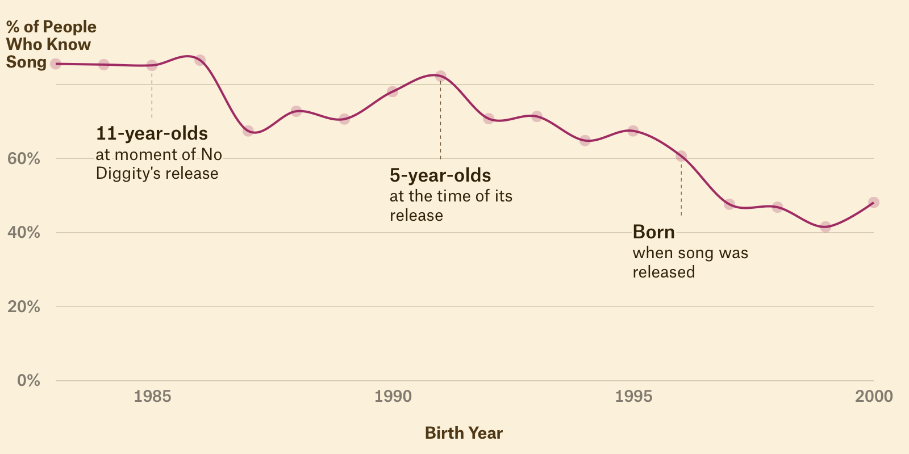
Sinatra, Elvis, and Chuck Berry are emblematic of ’50s music, but what’s the ’90s equivalent? Using the recognition data we collected, we can begin to define the canon. These will be the artists and songs that Gen Z and beyond seem to recognize (and value) among all the musical output from the decade.
First, it’s important to understand the general trends in the data. “No Diggity” knowledge peaks among people born in 1983, who were 13 years old when the track debuted in 1996. We also see a slow drop off among people who were not fully sentient when “No Diggity” was in its prime, individuals who were 5 years old or younger (or not born yet) in 1996.
That drop-off rate between generations—in this case, Millennials to Gen Z—is one indicator for whether “No Diggity” is surviving the test of time.
To make this a bit easier to read, we’ll chart a person’s age at the time of a song’s release, rather than birth year. For songs to be passed to down, generation to generation, we’d expect a slower decay rate—evidence that they’re part of the collective memory.
Let’s look at another example from the mid-nineties: “The Sign” by Ace of Base.
Similar to “No Diggity,” notice the decline in knowledge of “The Sign” among people who were 5 years old when it was released in 1993.
Recognition of “The Sign” by age in 1993, the year it debuted
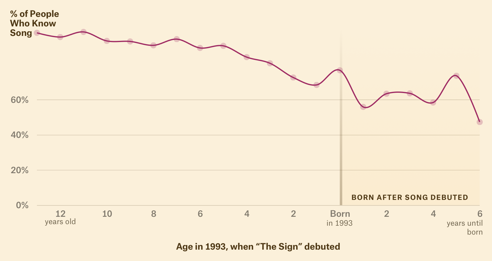
Only half of readers currently in their teens recognized “The Sign.” The trend here is that music has a natural half-life. Find someone 10 to 15 years your junior, and the likelihood that they’ll know your childhood music references is lower than you think.
How much lower?
Song knowledge erodes with each passing year. This is why I shouldn’t be shocked that my Gen Z colleague has never heard “The Sign,” or that teens are filming themselves listening to “Bohemian Rhapsody” for the first time. This is a normal part of the aging process for music.
If you take any present-day hit that’s culturally pervasive, such as “Old Town Road” or “Despacito,” we’d expect that someone born today, in 2020, will probably not recognize it twenty years from now. In short, there’s a good chance they’ll interpret your karaoking of Lizzo, Drake, or the Jonas Brothers in 2040 as an obscure act.
There are some especially sobering examples of this decay.
The 1999 hit “Wild Wild West” by Will Smith has lower-than-expected recognition among Gen Z. These songs are fading at an accelerated rate.
Wild Wild West, Will Smith, 1999
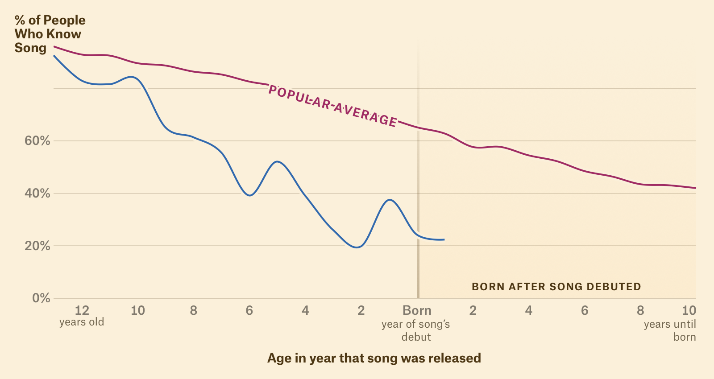
You're Still The One, Shania Twain, 1998
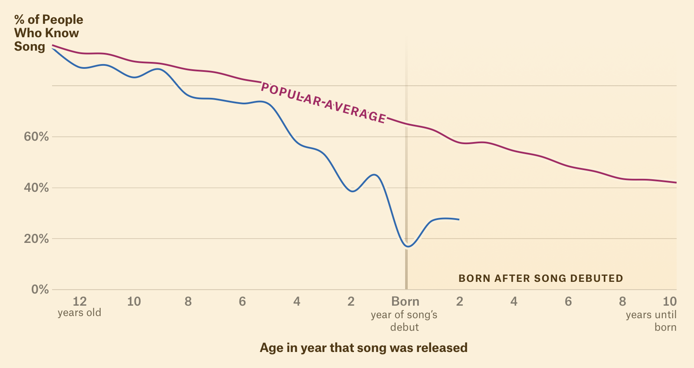
Opposites Attract, Paula Abdul, 1990
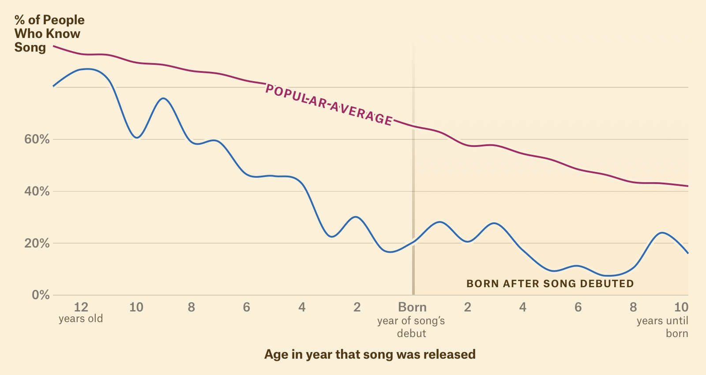
If You Had My Love, Jennifer Lopez, 1999
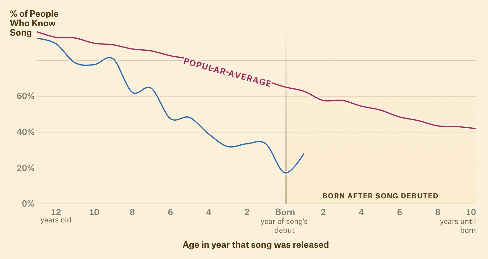
Quit Playing Games, The Backstreet Boys, 1997
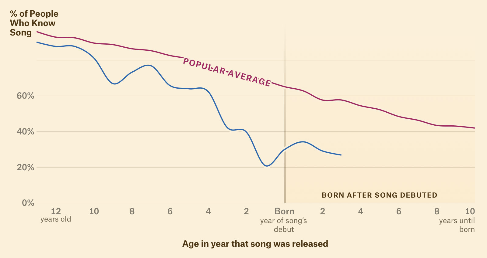
In 1999, “Wild Wild West” was the song of the summer. Yet it is fading far faster than any other ’90s hit with comparable starting popularity. Twenty years ago, it was inescapable. Maybe Millennials are still too sick of it, even for nostalgia rotation. Perhaps it wasn’t even that great of a song to begin with, artificially inflated by Smith’s celebrity and cross-promotion with the film Wild Wild West.
“Quit Playing Games” is the Backstreet Boys’ fastest-decaying hit (“Everybody” is the opposite, known by 97% of Millennials and 86% of Gen Z). I’m not sure where a love ballad like “Quit Playing Games” fits in 2020, but I was definitely surprised by how few Gen Zers know it. Same thing for J.Lo’s “If You Had My Love,” though there are far better songs from her oeuvre—she didn’t even perform it at the Super Bowl.
Other songs, meanwhile, remain unusually resilient and have higher-than-expected universal recognition.
These are candidate songs for the ’90s canon and have yet to fade from culture.
I Will Always Love You, Whitney Houston, 1992
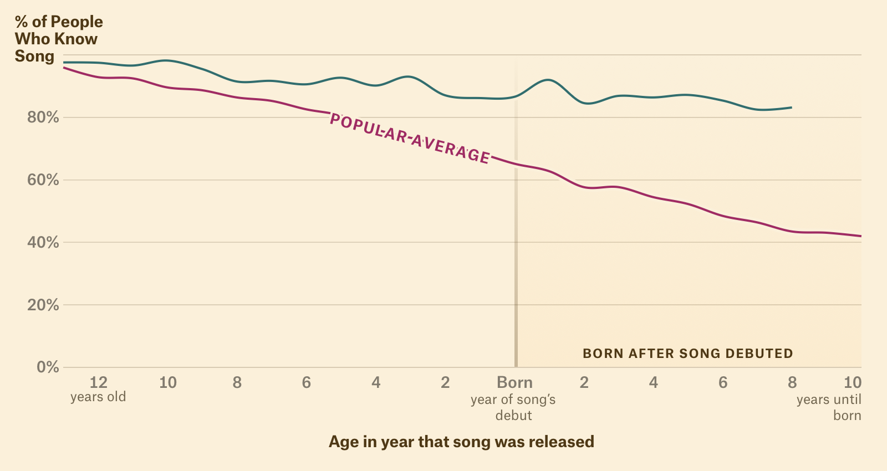
Wannabe, The Spice Girls, 1997
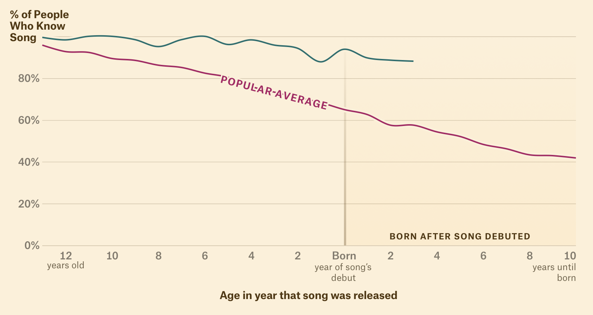
Macarena, Los Del Rio, 1996
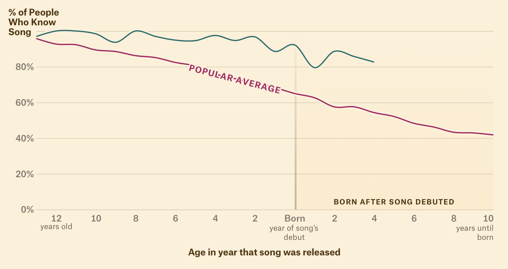
Jump Around, House Of Pain, 1992
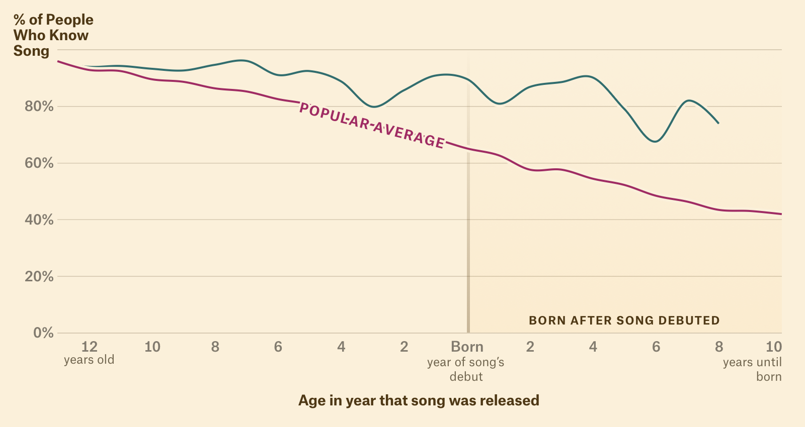
Gangsta's Paradise, Coolio, 1995
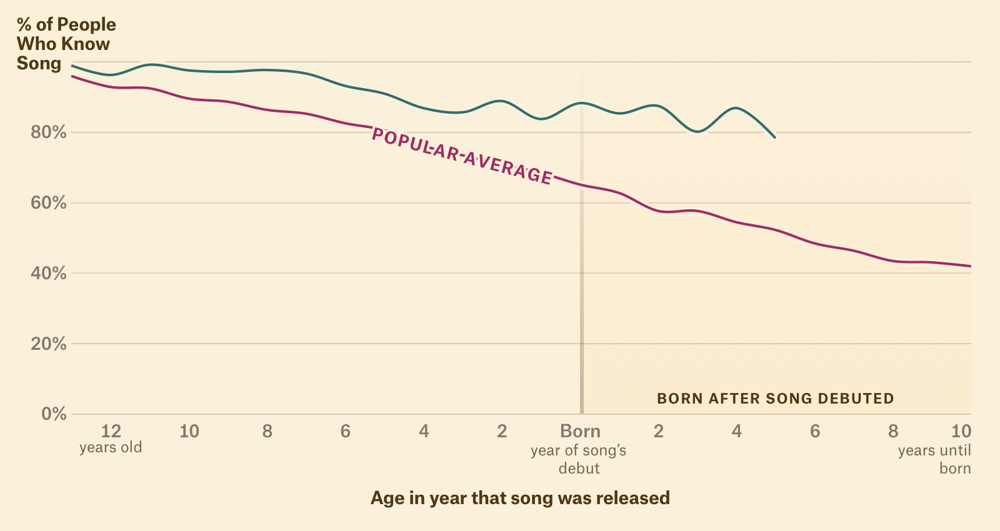
Why have these songs transcended generations? There’s no unifying theory. “Jump Around” still gets airplay during timeouts at sporting events. “Macarena” is still a bar mitzvah mainstay. “I Will Always Love You” is Whitney Houston’s magnum opus (or perhaps it’s Dolly Parton’s resurgence). While there are countless reasons for a song to stay culturally relevant, its staying power is not merely a function of its popularity in the year of release.
There’s another fascinating cut of this data: songs that are generational markers, which are approaching zero recognition by Gen Z.
K-Ci and JoJo’s “All My Life” and Jewel’s “You Were Meant For Me” are widely known by Millennials, but rarely recognized by anyone else.
Creep, TLC, 1995
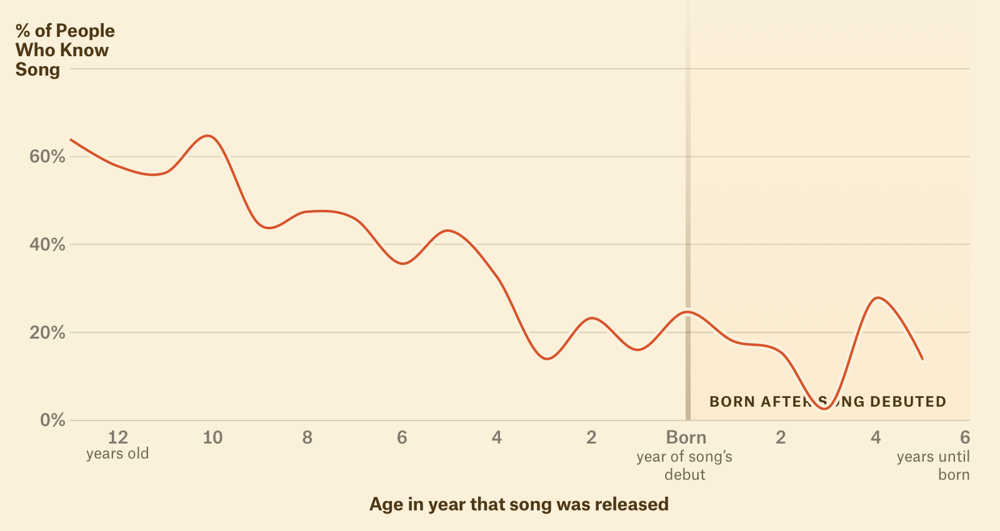
Too Close, Next, 1998
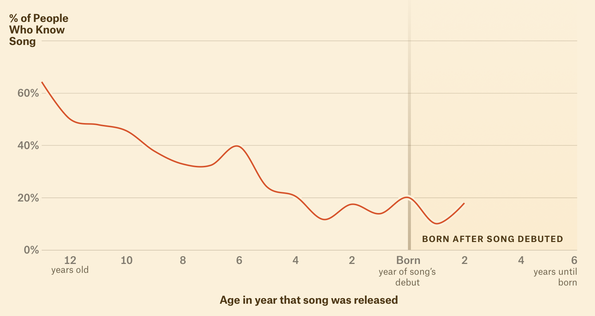
Stay, Lisa Loeb and Nine Stories, 1994
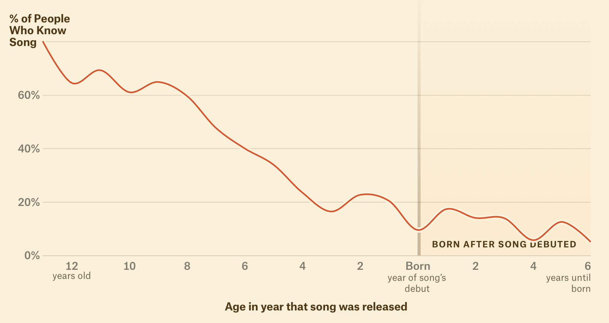
All My Life, K-Ci and JoJo, 1998
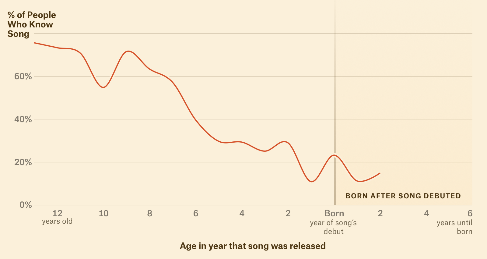
You Were Meant For Me, Jewel, 1997
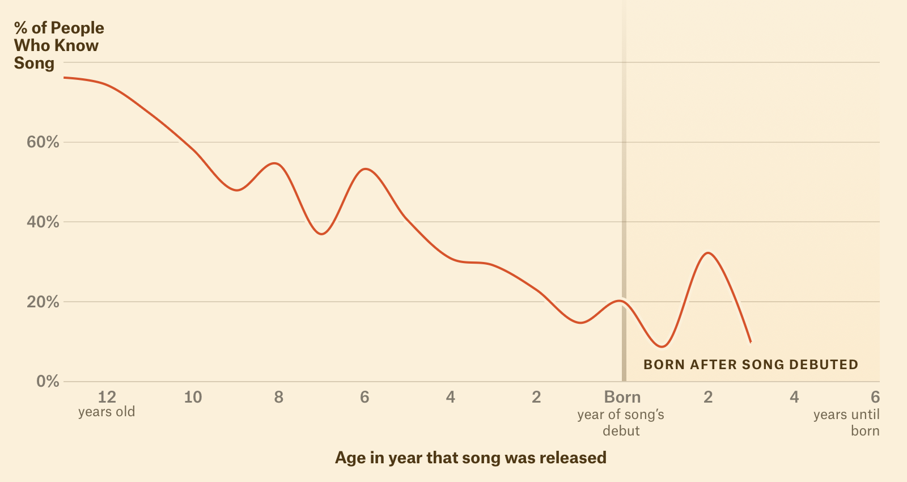
Tha Crossroads, Bone Thugs N Harmony, 1996
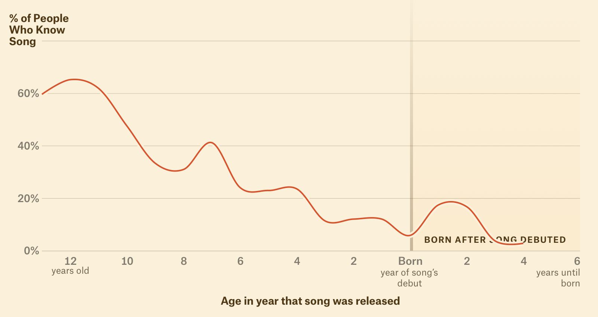
It seems sacreligious to think that future generations will not know the significance of “All My Life”. It’s disconcerting to think that the markers of my childhood, what was culturally ubiquitous, will, in a couple of decades, be lost to time. There will be a moment when I can, incredibly, play it for someone and they’ll hear it for the first time.
Maybe they’ll think it’s “good music.” That does seem to be the story of every generation: my parents went through the same existential shock when my knowledge of the ’70s was spottier than they expected.
Every parent makes a mental note of music they’ll pass down to their children—records that they hope will shape their children’s taste and barometer for quality. That process is a marvelous filtering mechanism, a value judgement of what should be cherished versus what just happened to be popular. Billboard #1 hits mean nothing if future parents don’t tell their children, “This is good music.”
When records are not replayed, they become fleeting fads in the eyes of history. In the case of “Wild Wild West,” the only people who understood its importance were those who were there in 1999, at peak Will Smith.
But, some songs will survive—the ones most recognized by Gen Z.
Here are all the ’90s songs that charted in the top 5 of the Billboard Hot 100, ranked by recognition rate among Gen Z.